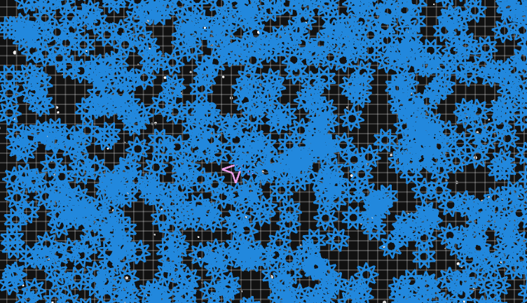

It's week two with this thing and I met the goals I set at the last minute as usual. It's now got bullets firing, aiming with or without pointer lock controls, and simple enemies to kill called "Spin Stars". The delta time multiplier is being properly distributed and used with most everything (even with asymptotic functions like camera easing), so if you're running it fullscreen on legacy hardware and you're experiencing significant frame lag, it should still sort of feel like things are the correct speed.
I also modularized the code a bit and added JsDoc/Doxygen compatible comments for each file, class, and function. I haven't tried to generate any docs for it yet, but why not? I'd love to see this code get hacked on and reused.
If you don't see anything in the frame above, then either your browser doesn't support WebGL, or your graphics driver is not sufficient for initializing a WebGL context.
The source code is available on GitHub.
To take control of the canvas, click on it. Like my previous post, you can use the classic W, S, A, and D keys (or the arrow keys) to navigate the ship around the field, but now you can control the direction of a cannon attached to the ship by moving the mouse around over the canvas.
You can also control the cannon by accepting the pointer lock request which fires every time the canvas is clicked, given that your browser supports it. This hides the mouse so you don't have to worry about accidentally moving the mouse out of the canvas and losing control.
Lastly, holding the mouse down causes the ship's cannon to continuously fire.
I'd never done anything with a collision detection grid before, but I figured that's what this would need if I want to stuff hundreds of enemies into the playing field and expect it to still run smoothly.
The whole "ActiveObject" thing for entities that do collision checking didn't end up happening since the player and the bullets will need to do different things upon collision. Instead, there's a general method in World that takes an entity and figures out if any enemies are colliding with it using the world's collision grid. Besides, why would I want to go overkill worrying about how everything involving entities needs to be stuffed somewhere within the entity hierarchy? Last time I checked, this isn't Java.
The resulting collision grid seems to be fast for bullet-to-entity collision detection so far, though I've yet to test it to its limit!

For the next time around, I'd like to have a couple more enemies, a timeline system, and maybe player death along with a way to start over.
More to come!
Graphics provided by WebGL via IvanK.js.